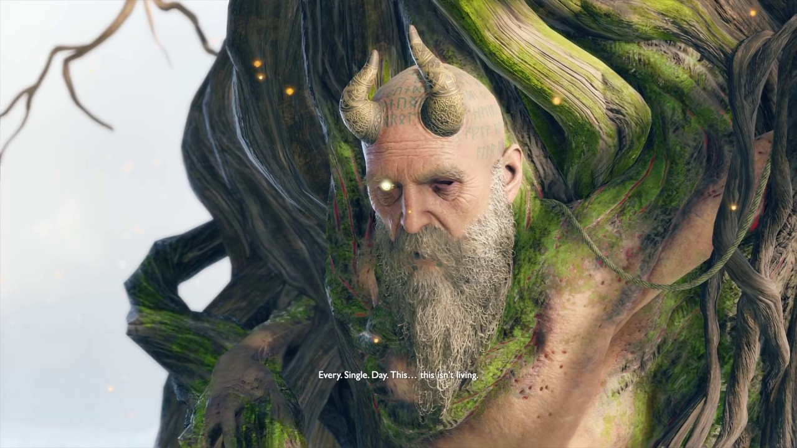

Mimir
 Mímir foi preso por Odin pois o Pai de Todos acreditava que Mímir estava colaborando com os gigantes na tarefa de esconder seu reino. Antes disso, Mímir era o principal conselheiro e embaixador de Odin em todos os outros reinos. Ao contrário dos Æsir, Mímir procurou fazer a paz entre os reinos, pois acreditava que era o melhor plano para evitar Ragnarök. No entanto, Odin raramente ouvia tais conselhos e frequentemente liderava muitas guerras, particularmente contra os vanir e os gigantes. Quando a guerra com os vanir promulgou uma devastação incalculável e deixou ambos os lados cansados, Mímir sugeriu uma trégua: Odin se casaria com seu inimigo mais mortífero, o líder dos Vanir, a deusa Freya. Depois de muita insistência, Odin e Freya concordaram com os termos, terminando, assim, a guerra.
No entanto, os esforços de Mímir em preservar a paz seriam frustrados pela paranóia de Odin, suas obsessões com as profecias e permitir que seu filho, Thor, assassinasse os gigantes. Assim, semelhante ao que fez com Týr, Odin confrontou Mímir, suspeitando que ele estava ajudando os gigantes. Como punição, Odin o aprisionou no pico mais alto de Midgard, enraizado em uma árvore indestrutível até mesmo para o martelo de Thor. Além disso, Odin removeu seu olho esquerdo adornado com joias e o escondeu. Antes de conhecer Kratos, ele era torturado diariamente pelo próprio Odin.
Baldur, o filho de Odin e Freya, juntamente com seus sobrinhos, Magni e Modi, o confrontam e tentam suborná-lo com liberdade em troca de revelar o paradeiro de Kratos e do menino, mas Mímir foi incapaz de localizá-los devido a uma runa ocultante colocada sobre o dois por uma bruxa, e mesmo que pudesse, Mímir sabia que Odin nunca o libertaria, não importando o que Baldur dissesse a seu pai, nem Odin permitiria que Baldur o matasse. Sendo assim, Mímir afirmou amargamente que eles não tinham nada para oferecer e exigiu que o trio o deixasse.
Quase imediatamente após a saída do trio, Kratos e Atreus se revelam a ele. Mímir se apresenta para os dois e secretamente admite a Kratos que ele sabe que Kratos é um deus. Quando Atreus descreve sua jornada até o pico mais alto de todos os Nove Reinos, Mimir afirma que Atreus está enganado ao escolher o pico mais alto de Midgard, já que o pico mais alto de todos os reinos está em Jötunheim, o reino selado dos gigantes. Com seu olho mágico direito, Mímir projeta uma visão do pico mais alto de Jötunheim para eles através dos pilares de pedra atrás deles, o último portão conhecido para o dito reino, e que só ele sabe como abrí-lo.
Em troca, Mimir pede a Kratos para cortar sua cabeça, explicando que, depois de mais de 100 anos de tortura, o estado em que ele se encontra não poder ser considerado vida. Kratos concorda em decapitá-lo, mas Atreus não aguenta assistir e sai, e quando ele faz isso, Mímir diz a Kratos que ele deve revelar seu passado para Atreus e quanto mais ele esperar, mais provável será que Atreus fique ressentido com ele. Kratos então corta sua cabeça, matando-o temporariamente.
Sua cabeça sem vida é levada para a casa de Freya, onde ela o reanima. É rapidamente revelado que os dois têm um mau relacionamento, evidenciado depois que Freya cospe na cara dele. Mímir também revela a identidade de Freya e, em troca, descobre que ela nunca havia revelado tal coisa a Atreus e Kratos, que, por sua vez, enfurece-se ao saber que ela escondeu deles sua divindade. No entanto, Freya repreende Kratos com a ironia de que ele também estava mantendo seu segredo de seu filho, e avisa Kratos que a ira de Odin virá rapidamente agora que ele libertou Mímir. Rosnando, Kratos sai tempestuosamente da casa de Freya sem agradecê-la.
Mímir torna-se, então, companheiro de jornada do espartano e de seu filho, emprestando seu considerável conhecimento sobre os reinos, sobre a natureza violenta e vil dos deuses Æsir e das tragédias causadas pelas guerras através dos tempos. Ele também tenta consertar o relacionamento tenso entre o pai e o filho.
Quando Atreus adoece perigosamente depois de libertar sua Ira Espartana pela primeira vez durante a batalha com os filhos de Thor, Mímir acompanha Kratos a Helheim em busca de uma cura. Quando Kratos vê o troll Máttugr Helson, Mimir o aconselha a causar problemas para chamar a atenção do guardião, já que eles precisavam de seu coração para curar Atreus. Depois que Kratos matou Helson, ele teve uma visão de Zeus e o chamou de pai, surpreendendo Mímir. Kratos então perguntou a Mímir sobre o outro lado da ponte, e ele o avisa gravemente para nunca ir até lá em circunstância alguma.
No caminho de volta para Midgard, Mímir disse a Kratos que ele estava surpreso que Zeus era seu pai. Depois de juntar a relação que Kratos teve com Atena, Zeus, suas lâminas de fogo e sua pele branca como a cinza, Mimir percebeu que Kratos não era ninguém menos que o próprio Fantasma de Esparta. Embora Kratos o tenha repreendido por relembrar seu título, Mímir afirmou que acreditava que as ações de Kratos para acabar com o panteão grego eram justificadas. Preocupado com Atreus, Mímir então argumenta com Kratos que ele teria que revelar a verdade sobre a verdadeira natureza de Atreus em breve, mas logo abandonou o assunto quando Kratos assim o ordenou.
Depois que Kratos mata Baldur, Atreus observa como eles são os "vilões" agora - Mímir defende as ações de Kratos afirmando que o mundo seria um lugar melhor com Freya, e explica por que ela está com raiva deles.
Quando Kratos e Atreus vão para Jötunheim, Kratos deixa Mímir para trás, a pedido dele (pois ele não queria "arruinar o momento" para eles), mas ficou com os anões Brok e Sindri, para seu descontentamento. Depois de espalharem as cinzas de Faye e voltarem, Mímir revela que eles ficaram lá por mais tempo que o esperado e que Freya perguntou a ele onde Odin havia colocado suas asas de valquíria. Mimir deu a ela a pouca informação que tinha sobre elas, terminando com a afirmação "O ciclo da vingança não é tão facilmente quebrado". Além disso, Mimir informa a Kratos e Atreus que a morte de Baldur inicia o inverno de três anos, o Fimbulwinter, precursor do Ragnarok, algo que, segundo as profecias, não aconteceria por mais algumas centenas de anos.
Mímir, então, se junta a Kratos e Atreus em sua jornada para casa, e, aparentemente, passa a viver com eles.